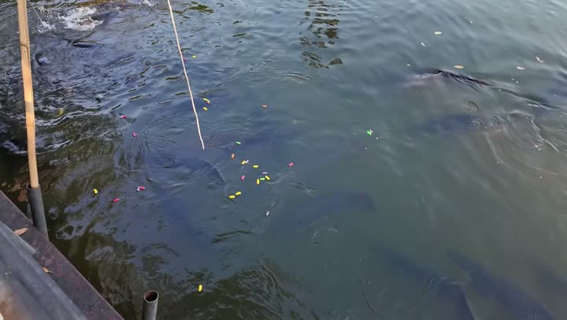

Атлас мест · Паттайя, Таиланд
Тропический сад Нонг Нуч (Nongnooch Pattaya Garden)

Наш отзыв
Нонгнуч — огромный ботанический сад под Паттайей, который постоянно развивается и обновляется. За день сложно обойти его полностью, поэтому рекомендуем выделить больше времени. Нас впечатлили экзотические растения, скульптуры и коллекция редких автомобилей. В саду приятно прогуливаться, хотя на жаре это утомительно. В соседнем ролике ребята посетили фруктовую ферму рядом с Нонгнучем. Там можно попробовать местные фрукты, покататься на экскурсионном автобусе и приобрести сувениры. Место приятное, туристов немного, а цены доступные.
Последний раз были здесь: 17 мая 2026
Заметка Димы: Ботанический сад Нонг Нуч.
Цены — на момент съёмки
- 200 батт входной билет (2026)
- купон на 50 батт (2026)
- стоимость со скидкой 240 батт на двоих (2026)
- ананасики продаются отдельно (2026)
- манго набирают сами посетители (2026)
- пакеты зелени по 25 бат (2026)
- кокосы по 30 бат (2026)
- упаковка с дурианом 170 батт (2026)
- грецкие орехи 120 батт (2026)
- Вход для обычного туриста — 600 батт (2025)
- Шоу + вход — 800 батт (2025)
- С тайскими правами — 500 батт (2025)
Совет: Выделите целый день на посещение Нонгнуча, чтобы успеть увидеть основные достопримечательности сада.
Где это
12.765497,100.93513139999999
Смотреть в наших роликах
Без экскурсии по гигантскому раю - испытание, но оно того стоит! ШАТАЕМСЯ по Нонг Нуч | ПАТТАЙЯ
16 июля 2025 · место с 32:21 · все места ролика
Огромная фруктовая ферма в Таиланде | Стоит ли ехать? Тайская фруктовая ферма превзошла все ожидания
17 мая 2026 · место с 1:04 · все места ролика
Рядом из нашего атласа
- Тропикал Гарден — 0 м
- Овечья ферма Паттайя (Swiss Sheep Farm Pattaya) — 1,4 км
- Свис Хотел (ферма) — 1,4 км
- Сурияленд (Suriyaland Pattaya) — 1,9 км
- Парк-музей «Легенда Сиама» — 2,2 км
- Гора Кхао Чи Чан (золотой Будда) (Buddha Mountain - Khao Chi Chan) — 2,2 км
Атлас мест канала «Юля и Дима / БЕЗ ТОРМОЗОВ». Описания составлены по нашим роликам; цены — на момент съёмки. Нашли неточность — напишите нам в Telegram.